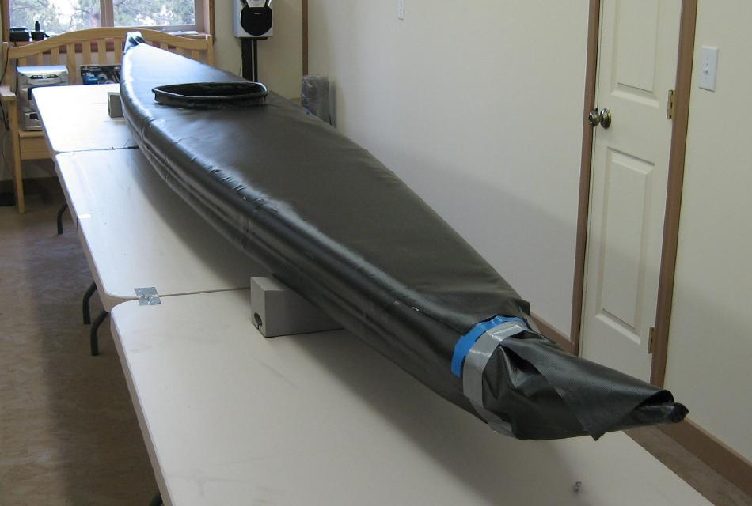

| Sonnet ( Deck) | Menu Last Page Next Page |
|

After glueing, remove all tape. Tape is easiest to remove if mimimal heat is applied as you work along the sides of the boat. This softens the tape adhesive as well as any vinyl cement that has gotten under the tape. If there are any small gaps under the deck, reheat the area and apply pressure to close them. At the stems, the hull skin that will be used to close the ends can be seen in the pic above.
|
|